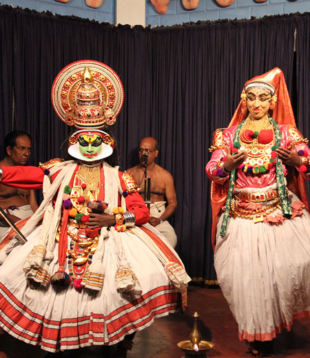

SIGNATURE TOUR TF-5

Duration: 13 D / 12 N
Destinations: Chennai - Pondicherry - Bangalore - Coorg - Bandipur - Wyanad - Calicut - Mumbai (via Calicut*) *Calicut has an international airport, from where some international connections can be made directly.
Take a step back in time with this tailor-made journey through South India's Tamil Nadu region. Soaring temples and serene, green countryside combine for an unforgettable look at India's past and present. The journey begins in the city of Chennai, on India's South-eastern Coromandel Coast - the capital of Tamil Nadu, which is a region noted for its magnificent ancient temples. Continue to Pondicherry, which has a rich French cultural heritage, having been the capital of the French colonies in India since the 17th century. The French legacy is visible in the well-planned town, neatly laid roads, wide and vibrant beaches, beautiful promenades, architecturally imposing churches, public buildings and statues. Split into two parts, Pondicherry is, on one hand a bustling Indian market town, and on the other, towards the sea, emptier, cleaner and decidedly European. Drive on to Coorg; the most affluent hill station in Karnataka. With its natural splendor and lush exotic scenic environment, Coorg has a special place among the hill stations in India. Nestled among the lush greeneries of the Western Ghats, Coorg offers an unequalled luxurious vacation experience to its guests. Coorg is praised as the 'Scotland of India' and also renowned as 'Kashmir of the South' due to the majestic beauty and cool ambience of the hill station at an altitude in the range of 3500 ft above sea level. Explore the Wild life of Karnataka visit Bandipur National Park, Bandipur National Park is part of the massive Nilgiri biosphere, home to some of the most endangered species of wild life, the majestic tiger being its poster child. Watered by 4 rivers - the Moyar, Kabini, Moolehole and Nugu, Bandipur is an area so close to nature and its creatures that a venture into its heart is one of the most beautiful journeys you could ever set upon, and to actually stay overnight, under the canopy of stars, is in one word-unforgettable. Travel to Wayanad : home to exotic legends, ancient ruins, mysterious mountain caves, aborigine tribes, hidden treasures, tree houses, jungle trails and exotic wild life, Kerala's Wayanad district is the perfect setting for a hundred great adventures! The hills, rocks and valleys which contribute to the very unique terrain of Wayanad provide for exceptional adventure experiences. Mountains and forests intersperse to create numerous outback trails, trekking routes and opportunities for other adventure sports. Finally, fly to the vibrant modern metropolis of Mumbai for some more contemporary luxury before flying on to other regions of the subcontinent, or back home.
Itinerary Highlights:
Day 01: Arrive in Chennai, and check into your preferred hotel.
Day 02: Take a private tour of the city of Chennai. In the evening, drive on to Pondicherry. Overnight at Pondicherry Day
03: Private city sightseeing tour of Pondicherry. Evening at leisure to browse on foot, overnight at Pondicherry.
Day 04: Morning at leisure, in the evening, fly to Bangalore. Overnight at Bangalore.
Day 05: Drive to Coorg. Overnight at eco resort in Coorg.
Day 06: Day at leisure. Overnight at Coorg.
Day 07: Drive to Bandipur National Park. Overnight at Jungle resort
Day 08: Jungle tour, day at leisure in Lap of Nature. Overnight at Jungle resort.
Day 09: Post breakfast, drive to Wayanad. After checking in to your hotel and lunch, take a walking tour. Overnight at Wyanad.
Day 10: Day at leisure / adventure activity / trekking tour
Day 11: Drive to Calicut, Fly to Mumbai.
Day 12 : Private sightseeing of Mumbai, evening at leisure, and overnight at Mumbai
Day 13: Departure
Where to Stay:
Chennai: All Taj / ITC hotels
Pondicherry: The Dune Eco beach hotel / Hotel De L' Orient / La Maison Tamoule
Bangalore: All Oberoi / Taj Hotels
Coorg: Orange County Resort / Windflower Spa & Resort
Bandipur: The Serai, Bandipur / Windflower
Wayanad: Vythri Village / Windflower
Mumbai: All Taj / Oberoi / Leela Hotels
Inclusions
- Hotel / Rooms Category as per specified or similar. The hotel accommodation is based on two persons sharing one double room with private facilities and daily American buffet breakfast (Some may include further meals)
- Private touring with your own personal guides, air conditioned vehicle (sedan, SUV or Tempo) with Chauffeur
- Entrance fees at all monuments / parks mentioned in the itinerary
- Child above 2 years and below 11 years without extra bed, breakfast cost to be settled directly by the guest. - Bottled water throughout the tour.
- Around-the-clock support in each destination during your trip
- Jungle activity (Guided Nature Walk, Cycling)
- Internal flights if any.
Exclusions
- Anything not mentioned under 'Package Inclusions'
- All personal expenses, portages, optional tours and extra meals / snacks
- Camera fees, alcoholic/non-alcoholic beverages
- Tips, laundry and phone calls
- Medical and travel insurance
- Any increase of Govt. taxes at time of operating the tour
- Any expense incurred or loss caused by reasons beyond our control such as bad weather, natural calamities, landslides, floods, flight delays, rescheduling, cancellations, any accidents, medical evacuations, riots/strikes/war, & etc.